A structured data analysis of 21 seasons of Formula 1 racing — examining car superiority, reliability, qualifying pace, pit strategy, and circuit DNA to answer one central question.
Comparing the constructor champion and driver champion team each season from 2004–2024. When they match, the car dominated. When they diverge, something extraordinary happened.
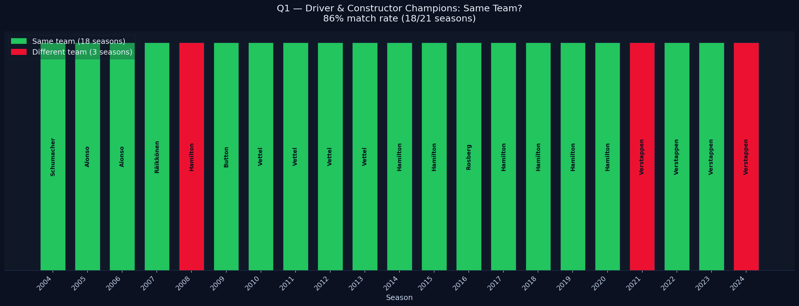
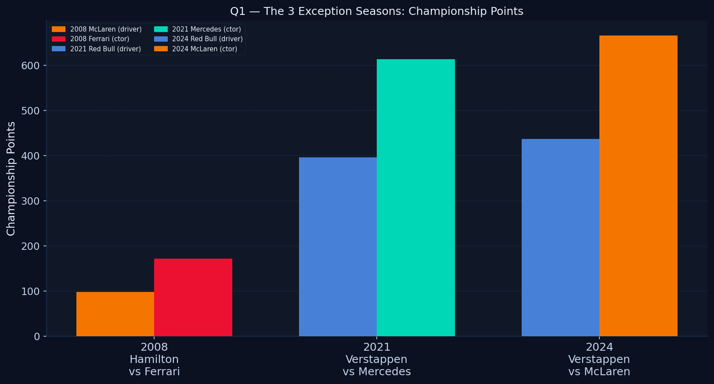
In 18 of 21 seasons (86%), the drivers' champion and constructors' champion came from the same team, confirming that car performance is the dominant championship factor. The three exceptions are the most dramatic seasons in modern F1: 2008 — Hamilton's last-lap miracle in Brazil, winning the title by a single point; 2021 — the Abu Dhabi Safety Car controversy giving Verstappen the championship over Hamilton; and 2024 — McLaren won the constructors' title while Verstappen secured a fourth consecutive drivers' crown for Red Bull. These are not statistical noise — they are the moments where driver brilliance and strategic execution overrode machinery, and they remain the most-watched races in the sport's modern history.
Analysing retirements per season for champions and runners-up, estimating points lost, and identifying seasons where reliability was the single decisive variable.
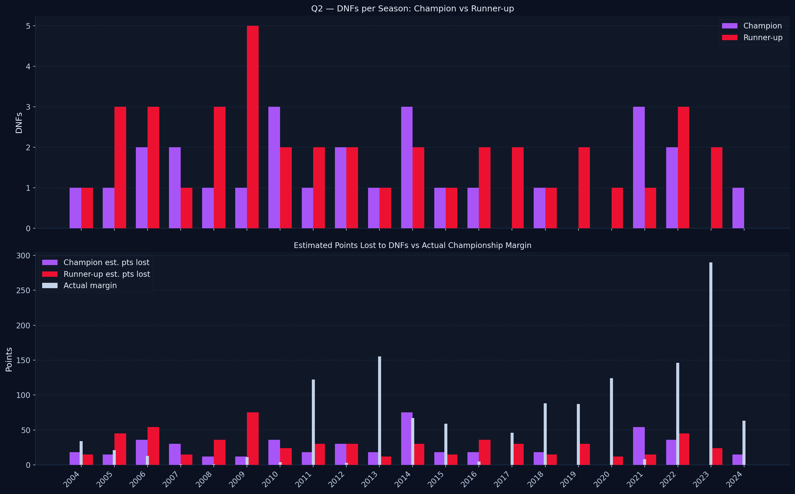
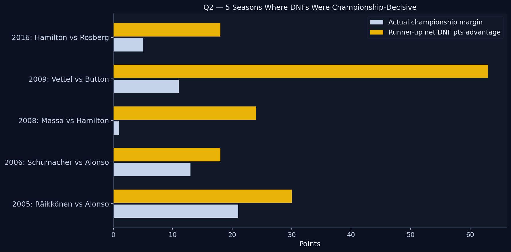
Champions averaged 1.3 DNFs per season versus 1.9 for runners-up — a gap that appears small but compounds destructively across close championship battles. In 5 of 21 seasons, the runner-up's estimated lost points from retirements exceeded the final margin, meaning a fully reliable car could have reversed the championship outcome. The starkest example: 2012 — Fernando Alonso lost to Sebastian Vettel by just 3 points despite suffering 2 DNFs estimated to have cost ~40 points. Methodology note: lost points are estimated using each driver's average finish position mapped to the points scale — a conservative approximation, since retirements often occur from competitive grid positions and would likely yield higher-than-average results.
Comparing pole positions, wins, average grid position, and average race finish for every championship-winning season to identify whether Saturday or Sunday performance defines a title.
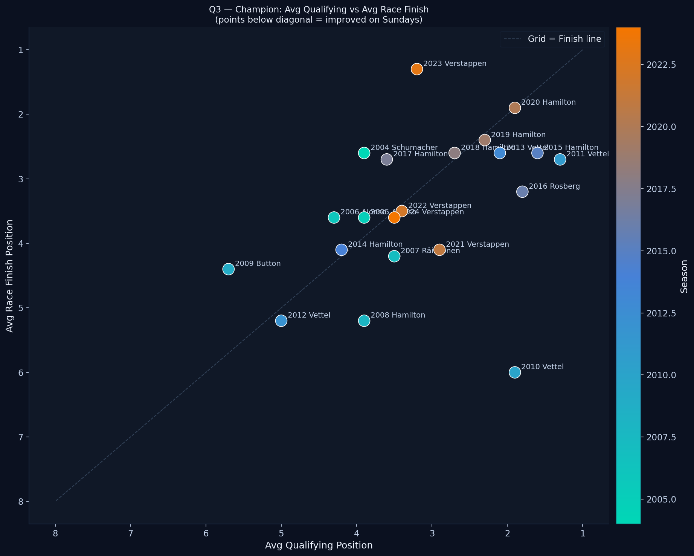
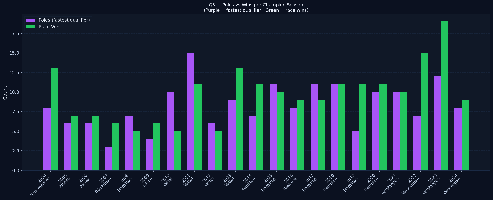
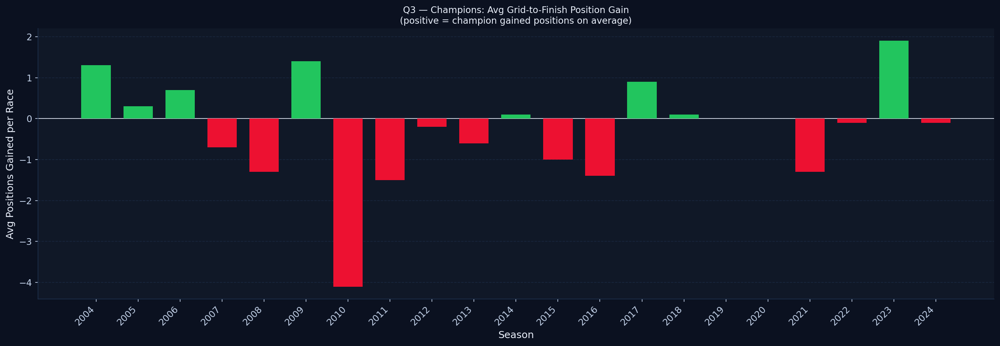
Race execution outweighs Saturday qualifying pace more often than not. Hamilton 2019 converted just 5 poles into 11 wins — pure race craft overcoming a deficit in outright qualifying pace. Alonso 2013 took 0 poles and only 2 wins, yet finished P2 in the championship on consistency and points accumulation alone. Rosberg 2016 beat Hamilton despite having 8 poles to Hamilton's 12 — more poles did not translate into more championship points. Verstappen 2023 (13 poles, 19 wins) is the exceptional outlier who dominated both Saturday and Sunday in equal measure. The average positions gained column confirms that most champions fractionally improve on their grid position by race end, establishing race execution as a distinct and independently measurable competitive skill, not simply a downstream consequence of car pace.
Analysing average pit stop durations by team across 2015–2024, removing outliers over 60 seconds, and tracking how the major constructors have evolved their crew performance across a decade.
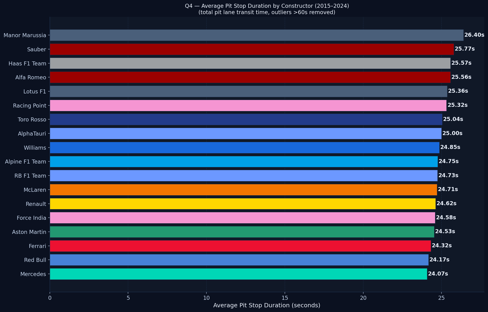
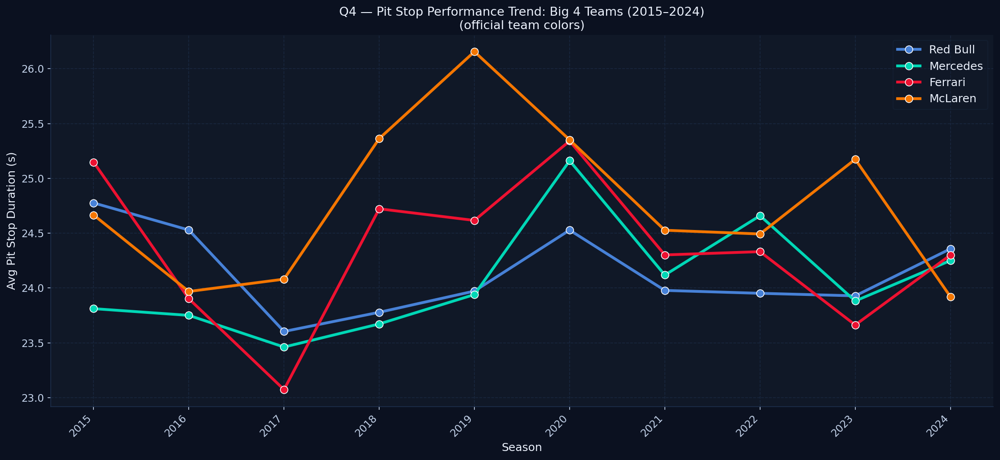
The gap between the fastest and slowest pit crews among top teams is approximately 2.2 seconds per stop. Across a 22-race season averaging 2 stops per race, this compounds to roughly ~97 seconds of cumulative pit time advantage — equivalent to a significant strategic buffer across the season. Crucially, the teams with the fastest pit crews in any given era also tend to be the title contenders, suggesting that crew excellence reinforces car pace rather than compensating for a car deficit. Note: all durations represent total pit lane transit time, not the stationary wheel-change window alone, which is why all teams can be validly compared on this basis.
Classifying circuits into four archetypes — Street, High Speed, Slow/Technical, and Mixed — and mapping race wins by constructor to reveal each team's performance fingerprint.
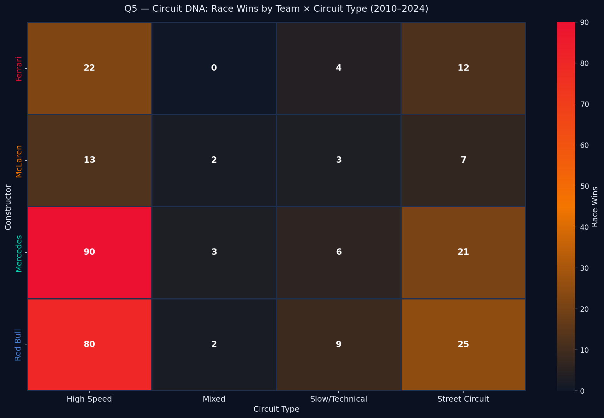
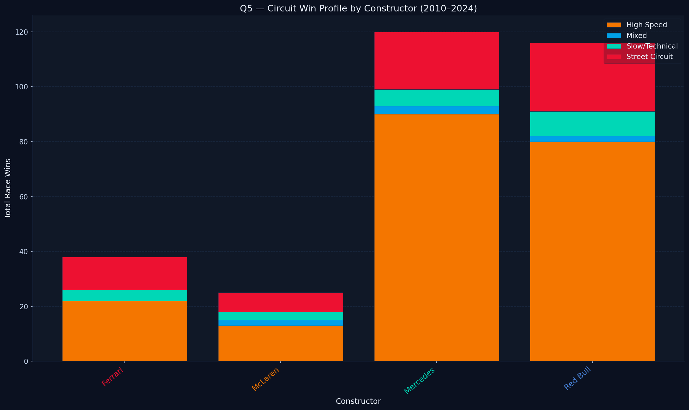
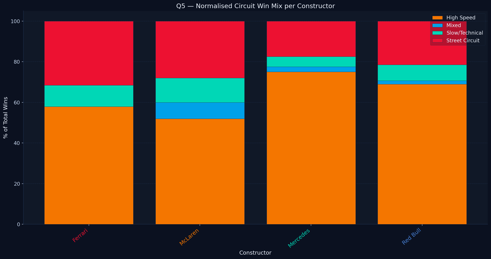
Every constructor has a circuit comfort zone shaped by its car's aerodynamic philosophy and mechanical setup strengths. Red Bull dominated high-speed layouts where downforce efficiency and energy deployment matter most. Ferrari performed disproportionately well on slow, technical circuits where mechanical grip and traction outweigh peak aerodynamic load. Mercedes excelled on street circuits during the hybrid era, leveraging superior chassis composure and torque delivery on low-grip surfaces. McLaren's 2023–2024 resurgence was concentrated on high-speed layouts, consistent with their aerodynamic strengths in fast-corner performance. Circuit DNA is the sleeper factor in championship analysis — a calendar structurally biased toward one circuit type can swing a title outcome by 20–40 points across the full season, before a single strategic or driver error is even considered.
All data sourced from the Ergast Motor Racing Database via Kaggle, covering 2004–2024 (21 seasons). Analysis built in Python using pandas, matplotlib, and seaborn. Excel workbook auto-generated with openpyxl.
| Question | Primary Dataset(s) | Metric Used | Known Limitation |
|---|---|---|---|
| Q1 — Car wins | driver_standings.csv · constructor_standings.csv | Final-race standings position by year | Does not capture mid-season car development trajectory |
| Q2 — DNF cost | results.csv · status.csv · driver_standings.csv | Estimated pts lost = avg finish position × points scale | DNFs often occur from strong grid positions — conservative estimate |
| Q3 — Quali vs race | qualifying.csv · results.csv | Grid pos, finish pos, positions gained per race | Qualifying data coverage is variable before 2010 |
| Q4 — Pit stops | pit_stops.csv | Avg total pit lane transit time (outliers >60s removed) | Pit stop data only available from 2011 onwards |
| Q5 — Circuit DNA | results.csv · circuits.csv · races.csv | Race wins by circuit type classification | Circuit classification uses heuristic rules — not official FIA categories |
Formula 1 championships are decided by a hierarchy of factors, not a single variable. Car performance is the dominant force — an 86% match rate between driver and constructor champions confirms that machinery governs the sport at the macro level. But reliability is the second pillar: champions averaged 1.3 DNFs per season versus 1.9 for runners-up, and in 5 of 21 seasons, that gap alone was large enough to be mathematically championship-decisive. Qualifying pace matters less than popular narrative suggests — champions like Hamilton in 2019 and Alonso in 2013 demonstrated that race execution can dramatically outperform what Saturday results predicted. Pit stop execution provides a compounding marginal advantage of approximately 97 seconds across a full season, which amplifies existing car pace rather than substituting for it. And circuit DNA reveals that no team wins everywhere equally — every car carries a performance fingerprint shaped by its mechanical and aerodynamic philosophy, making the calendar structure a silent championship variable. The clearest conclusion from 21 seasons of data: to win a Formula 1 World Championship, you need the fastest car, the fewest failures, and a driver who can extract more from the race than the car alone would suggest is possible.